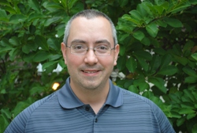

Kenneth Robin, Psy.D.
Senior Research Scientist and Assistant Research Professor
E-mail: krobin@albany.edu
Telephone: (518) 591-8797
Specialization: Early Childhood Education and
Psychology
Projects:
21st Century Community Learning Centers
Albany Promise Evaluation
Chemung County School Readiness Program
Evaluation of New York's AmeriCorps State Volunteer Generation Initiative
Evaluation of the Northeast Parent & Child Society Mentoring for Change Program
My Brother’s Keeper Challenge Grant (MBKCG)
New York State Childcare Workforce Development Evaluation
New York State: Ready to Learn Evaluation
Preschool Development Grant Birth Through Five
Safe Schools/Healthy Students Evaluation
The City of Albany School District Data Analysis
Ken is the lead evaluator for several of CHSR’s projects in the field of education research and evaluation. Current work includes the City School District of Albany’s Magnet Schools Assistance Program and Safe Schools/Healthy Students grants, which respectively focus on the reorganization of Albany High School into four theme-based magnet academies, and on comprehensive support services for students. Ken also leads the evaluation of Chemung County’s School Readiness Project and works with the SUNY Chancellor’s office on the Albany Promise initiative to build civic infrastructure. Previously, Ken has completed evaluations for New York’s AmeriCorps State programs, WMHT Telecommunications (Ready to Learn Evaluation), and the Northeast Parent and Child Society.
Before coming to CHSR, Ken was an Assistant Research Professor at Rutgers University working for the National Institute for Early Education Research (NIEER). Projects included data management for and co-authorship of the annual State of Preschool Yearbook. Other experience involved research design for evaluations of state preschool programs in New Mexico and Kansas. Ken also wrote policy briefs, conducted cost estimates, and provided research-based advice to policy makers, educators, and media.
Ken received his Bachelor’s degree in Human Development from Cornell University; he completed his Master’s degree and Psy.D. in School Psychology at Rutgers University. Ken is a licensed school psychologist.